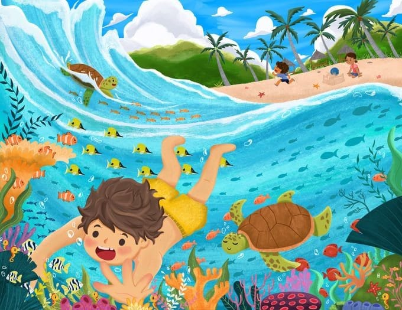

About Us
Hai! Selamat datang di website kami, tempat kamu bisa menemukan semua hal keren tentang kehidupan bawah air.
Kami adalah sekelompok pecinta alam yang punya misi untuk mengenalkan kamu pada keindahan dan keajaiban yang ada di lautan, sungai, dan danau.
Di sini, kamu bisa belajar tentang makhluk-makhluk menakjubkan yang hidup di air, habitat mereka, dan bagaimana kita bisa menjaga kelestariannya.
Kenapa sih kami bikin website ini?
Karena kami percaya, semakin banyak orang yang paham dan peduli dengan dunia bawah air, semakin besar juga peluang kita untuk melindungi planet ini.
Plus, siapa yang nggak suka dengan ikan-ikan lucu, terumbu karang warna-warni, dan hewan laut keren seperti paus dan penyu?
Mau tau lebih banyak? Yuk, jelajahi lebih dalam dan temukan rahasia di balik setiap ombak!
